本项目使用FER2013数据集进行训练,使用了Pytorch、tensorflow、paddlepaddle框架,实现了多个简单的神经网络模型,用于人脸表情识别。
--csvs # 数据集
|--fer2013.csv
--imgs # README的图片
--models # 模型定义
|--framework # 框架代码
|--_pytorch.py
|--_tensorflow.py
|--_paddlepaddle.py
|--models # 模型代码
|--_CNN.py
|--_MLP.py
|--result_h5 # tensorflow模型保存目录
|--result_paddle # paddlepaddle模型保存目录
|--result_pth # pytorch模型保存目录
|--ROC # ROC曲线保存目录
--ROC # PreTrained.py文件保存ROC曲线的目录
--to_be_predicted # 待预测的图片文件夹
--ui # PyQt6界面代码
|--fer2013_ui.py
|--fer2013_ui.ui
--main.py # 主程序
--PreTrained.py # 使用预训练模型的Python程序,独立于主程序
下面的
torchenv是一个Pytorch环境,可以根据自己的需要更改
yay -S miniconda3
/opt/miniconda3/bin/conda init zsh
conda create -n torchenv python=3.11 -y
conda activate torchenv
pip install pyqt6-tools pandas numpy tqdm pyinstaller jupyterlab notebook opencv-python scikit-learn matplotlib torch torchvision torchaudio
python3 -c "import torch; print(torch.cuda.is_available())"
如果环境为tensorflow或paddlepaddle,请自行安装对应的环境,从下面的命令中选择对应的pip命令
pip install pyqt6-tools pandas numpy tqdm pyinstaller jupyterlab notebook opencv-python scikit-learn matplotlib 'tensorflow[and-cuda]'
pip install pyqt6-tools pandas numpy tqdm pyinstaller jupyterlab notebook opencv-python scikit-learn matplotlib paddlepaddle-gpu
从这里下载FER2013数据集,将fer2013.csv放入csvs文件夹中
conda activate torchenv
python PreTrained.py
PreTrained.py 文件使用了预训练的 ResNet-18 模型来进行 FER2013 数据集的情感分类。以下是代码的主要部分和功能说明：
数据集类：
FER2013Dataset：自定义数据集类,用于加载 FER2013 数据集,并根据 mode 参数将数据集划分为训练集和测试集。数据增强和预处理：
transform_pytorch：定义了数据增强和预处理操作,包括调整图像尺寸、随机水平翻转、随机旋转、颜色抖动、转换为张量和归一化。数据加载：
DataLoader 加载训练集和测试集,分别存储在 train_loader 和 test_loader 中。预训练模型：
PretrainedModel：定义了一个使用预训练 ResNet-18 模型的类,并将输入通道数修改为 1（灰度图像）,输出类别数设置为 7（情感类别）。训练和评估函数：
train_model：定义了模型的训练和评估函数,包括训练过程、损失计算、优化器更新、学习率调度、测试集评估、混淆矩阵计算和 ROC 曲线绘制。模型初始化和训练：
PretrainedModel 模型,并调用 train_model 函数进行训练和评估。通过运行 PreTrained.py 文件,可以使用预训练的 ResNet-18 模型对 FER2013 数据集进行情感分类,并输出训练和测试结果。
这里为节省篇幅,不再叙述主程序代码,有需要可以查看项目文件
请根据自己的环境选择对应的
conda环境,这里以torchenv为例
conda activate torchenv
python main.py

to_be_predicted文件夹中有待测试的图片,点击后会显示图片的预测结果。以下均在
torchenv环境下进行使用
tfenv或paddleenv环境,请修改模型框架为对应环境
先解释一下数据集处理
class FER2013Dataset(Dataset):
def __init__(self, csv_file, self_transform=None, mode='train', test_size=0.2):
self.data = pd.read_csv(csv_file)
self.transform = self_transform
self.mode = mode # 根据传入的 mode 参数设置模式
# 将数据划分为训练集和测试集
train_data, test_data = train_test_split(self.data, test_size=test_size, random_state=42, shuffle=True)
self.train_data = train_data.reset_index(drop=True)
self.test_data = test_data.reset_index(drop=True)
我们把测试集的比例设置为20%,使用sklearn的train_test_split函数进行划分。
我们的数据增强和预处理包括调整尺寸,随机水平翻转,随机旋转,颜色抖动,转换为张量和归一化。
transform_pytorch = transforms.Compose([
transforms.Resize((224, 224), interpolation=Image.BILINEAR), # 调整图像尺寸为 224x224,使用双线性插值
transforms.RandomHorizontalFlip(),
transforms.RandomRotation(10),
transforms.ColorJitter(brightness=0.2, contrast=0.2, saturation=0.2, hue=0.2),
transforms.ToTensor(),
transforms.Normalize(mean=[0.5], std=[0.5])
])
下面划分数据,批次大小为32,训练集为train_loader,测试集为test_loader。
train_dataset = FER2013Dataset(csv_file=csv_file, self_transform=transform_pytorch, mode='train', test_size=0.2)
test_dataset = FER2013Dataset(csv_file=csv_file, self_transform=transform_pytorch, mode='test', test_size=0.2)
train_loader = DataLoader(train_dataset, batch_size=32, shuffle=True)
test_loader = DataLoader(test_dataset, batch_size=32, shuffle=False)
预训练模型定义及初始化如下（具体训练代码见PreTrained.py）：
我们使用 models.resnet18(pretrained=True) 加载预训练的 ResNet-18 模型,该模型在 ImageNet 数据集上进行了预训练,具有较强的特征提取能力。
我们将模型的第一个卷积层 conv1 的输入通道数修改为 1（灰度图像）,以适应 FER2013 数据集的输入图像。原始的 ResNet-18 模型的第一个卷积层输入通道数为 3（RGB 图像）。
对于输出层,我们将模型的全连接层 fc 的输出类别数设置为 7（FER2013 数据集的情感类别数）。
class PretrainedModel(nn.Module):
def __init__(self, num_classes=7):
super(PretrainedModel, self).__init__()
self.model = models.resnet18(pretrained=True)
self.model.conv1 = nn.Conv2d(1, 64, kernel_size=(7, 7), stride=(2, 2), padding=(3, 3), bias=False)
self.model.fc = nn.Linear(self.model.fc.in_features, num_classes)
def forward(self, x):
return self.model(x)
# 初始化模型
model = PretrainedModel(num_classes=7)
# 训练和评估模型
train_model(model, train_loader, test_loader, num_epochs=100, learning_rate=0.001)
训练过程中,我们使用了Adamax优化器,学习率为0.001,训练了100个epoch,损失函数为交叉熵。
下面给出训练第92轮的结果
Epoch 92/100: 100%|█████████████████████████████████████████████████████████████████| 898/898 [01:49<00:00, 8.19batch/s]
Epoch 92/100, Loss: 0.2766, Accuracy: 90.2226%
Test Accuracy: 68.2781%
Class 0 (Angry): TP=595, FP=372, TN=5821, FN=390
Class 1 (Disgust): TP=68, FP=27, TN=7049, FN=34
Class 2 (Fear): TP=546, FP=393, TN=5742, FN=497
Class 3 (Happy): TP=1508, FP=216, TN=5197, FN=257
Class 4 (Sad): TP=718, FP=597, TN=5371, FN=492
Class 5 (Surprise): TP=614, FP=164, TN=6219, FN=181
Class 6 (Neutral): TP=852, FP=508, TN=5392, FN=426
Overall: Accuracy=68.2781%, Precision=0.6265, Recall=0.6667, F1 Score=0.6459
以及对应的ROC图像
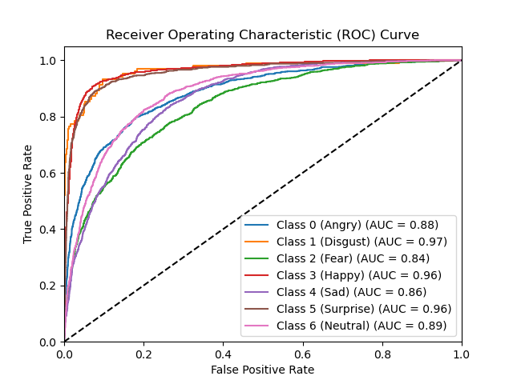
可以看到这里的验证准确率为68.2781%,F1 Score为0.6459,ROC曲线显示的7条曲线分别代表7个类别的ROC曲线。基本上每一条曲线都在向左上角靠拢,说明预训练模型的效果还是不错的。
这里不再说明具体代码,
models文件里也有详细注释
TP: 真正例, FP: 假正例, TN: 真负例, FN: 假负例
我们使用以下代码来输出类别
import pandas as pd
# 加载数据集
csv_file = 'fer2013.csv'
data = pd.read_csv(csv_file)
# 定义情绪标签
emotion_labels = {
0: "Angry",
1: "Disgust",
2: "Fear",
3: "Happy",
4: "Sad",
5: "Surprise",
6: "Neutral"
}
# 统计每个类别的样本数量
class_counts = data['emotion'].value_counts().sort_index()
class_counts.index = class_counts.index.map(emotion_labels)
print(class_counts)
输出结果如下
emotion
Angry 4953
Disgust 547
Fear 5121
Happy 8989
Sad 6077
Surprise 4002
Neutral 6198
Name: count, dtype: int64
可以看到数据集的不平衡性
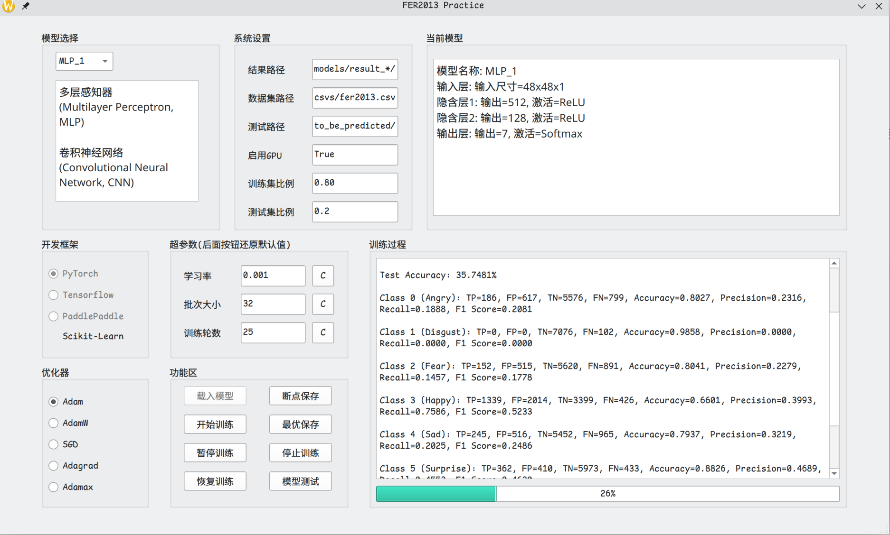
我们先使用一个非常简单的模型来测试项目代码是否能正常运行,具体参数图中直接给出了。
模型名称: MLP_1
输入层: 输入尺寸=48x48x1
隐含层1: 输出=512, 激活=ReLU
隐含层2: 输出=128, 激活=ReLU
输出层: 输出=7, 激活=Softmax
可以看到,第一轮训练,第二个类别的TP和FP都为0,说明模型还未收敛,也侧面反应数据集的不平衡性。
测试暂停训练和恢复训练的按钮都能正常使用。
下面开启断点保存和最优保存,模型能够正常保存。
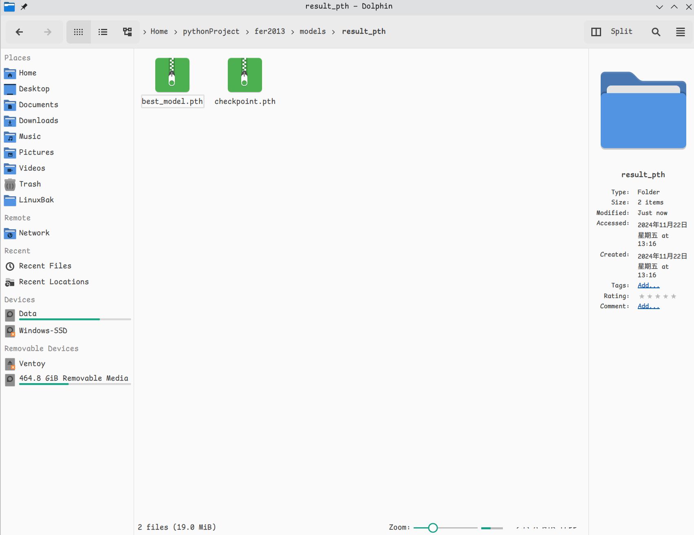
下面我们在to_be_predicted文件夹中放入几张图片,点击模型测试,可以看到图片的预测结果。
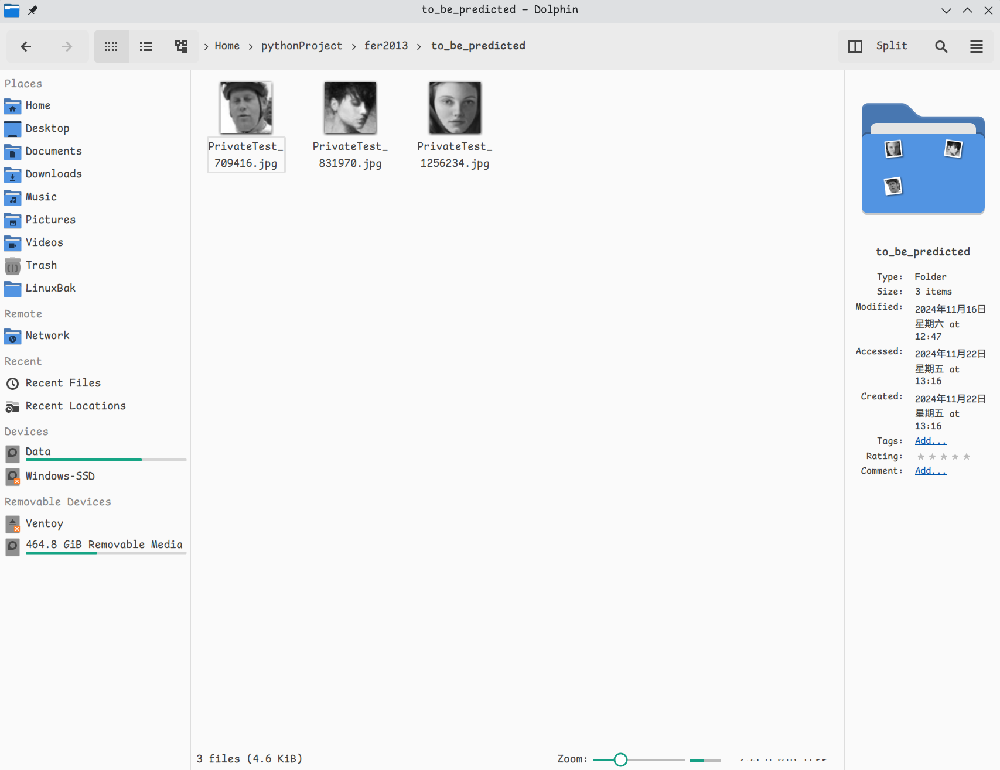
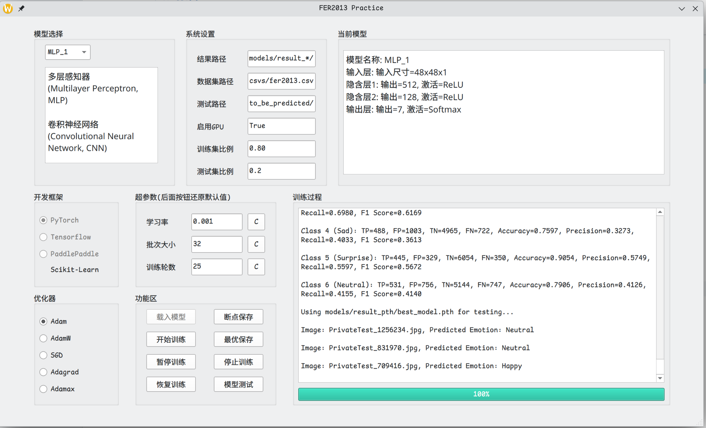
遗憾的是三张图片都预测错了,可能是模型不够复杂,或者测试图片太少。
下面是第25轮的输出
正在训练第 25 轮...
Epoch 25/25, Loss: 1.3149, Accuracy: 49.0752%
Test Accuracy: 44.4831%
Class 0 (Angry): TP=286, FP=513, TN=5680, FN=699, Accuracy=0.8312, Precision=0.3579, Recall=0.2904, F1 Score=0.3206
Class 1 (Disgust): TP=15, FP=16, TN=7060, FN=87, Accuracy=0.9857, Precision=0.4839, Recall=0.1471, F1 Score=0.2256
Class 2 (Fear): TP=196, FP=371, TN=5764, FN=847, Accuracy=0.8303, Precision=0.3457, Recall=0.1879, F1 Score=0.2435
Class 3 (Happy): TP=1232, FP=997, TN=4416, FN=533, Accuracy=0.7868, Precision=0.5527, Recall=0.6980, F1 Score=0.6169
Class 4 (Sad): TP=488, FP=1003, TN=4965, FN=722, Accuracy=0.7597, Precision=0.3273, Recall=0.4033, F1 Score=0.3613
Class 5 (Surprise): TP=445, FP=329, TN=6054, FN=350, Accuracy=0.9054, Precision=0.5749, Recall=0.5597, F1 Score=0.5672
Class 6 (Neutral): TP=531, FP=756, TN=5144, FN=747, Accuracy=0.7906, Precision=0.4126, Recall=0.4155, F1 Score=0.4140
Using models/result_pth/best_model.pth for testing...
Image: PrivateTest_1256234.jpg, Predicted Emotion: Neutral
Image: PrivateTest_831970.jpg, Predicted Emotion: Neutral
Image: PrivateTest_709416.jpg, Predicted Emotion: Happy
以及第25轮的ROC曲线
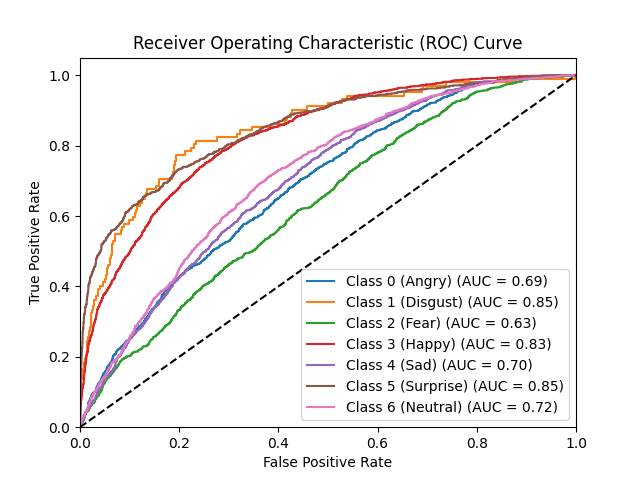
显然效果并不如预训练模型好,下面我们继续测试其他模型,看看到底能做得多好。
以下的模型我们直接上结果,需要时再详细说明
直接说结果,后面的MLP模型比最简单的MLP_1模型还差了点,收敛也很快,准确率只有40%出头,我们如果要训练fer2013数据集,还是需要更复杂的模型,比如接下来的CNN_1/2/3/4这些模型。
正在训练第 42 轮...
Epoch 42/100, Loss: 1.5194, Accuracy: 40.6806%
Test Accuracy: 41.4182%
Class 0 (Angry): TP=163, FP=286, TN=5907, FN=822, Accuracy=0.8456, Precision=0.3630, Recall=0.1655, F1 Score=0.2273
Class 1 (Disgust): TP=0, FP=0, TN=7076, FN=102, Accuracy=0.9858, Precision=0.0000, Recall=0.0000, F1 Score=0.0000
Class 2 (Fear): TP=70, FP=196, TN=5939, FN=973, Accuracy=0.8371, Precision=0.2632, Recall=0.0671, F1 Score=0.1070
Class 3 (Happy): TP=1328, FP=1466, TN=3947, FN=437, Accuracy=0.7349, Precision=0.4753, Recall=0.7524, F1 Score=0.5826
Class 4 (Sad): TP=510, FP=1139, TN=4829, FN=700, Accuracy=0.7438, Precision=0.3093, Recall=0.4215, F1 Score=0.3568
Class 5 (Surprise): TP=418, FP=357, TN=6026, FN=377, Accuracy=0.8977, Precision=0.5394, Recall=0.5258, F1 Score=0.5325
Class 6 (Neutral): TP=484, FP=761, TN=5139, FN=794, Accuracy=0.7834, Precision=0.3888, Recall=0.3787, F1 Score=0.3837
模型参数如下
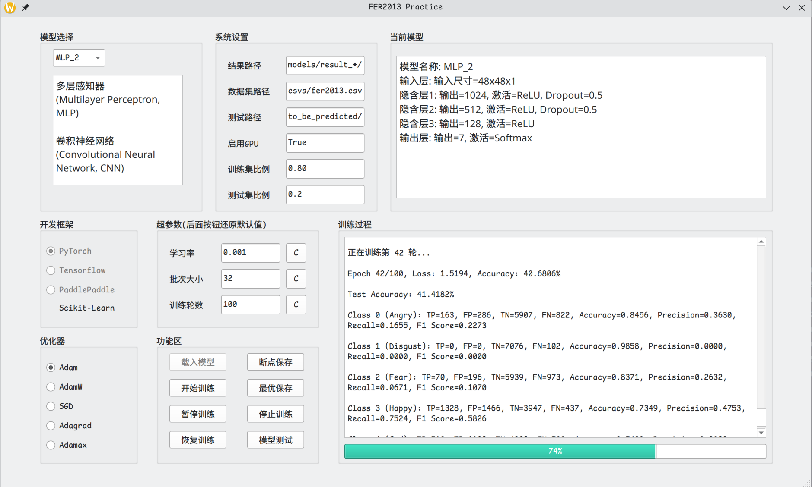
以及对应的ROC曲线
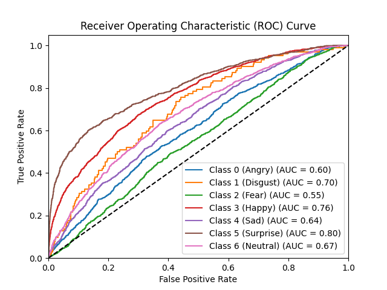
第二个类别样本数量少,模型也并未在这个类别上表现出色,F1值为零。
正在训练第 30 轮...
Epoch 30/100, Loss: 1.5019, Accuracy: 41.7674%
Test Accuracy: 41.2510%
Class 0 (Angry): TP=127, FP=246, TN=5947, FN=858, Accuracy=0.8462, Precision=0.3405, Recall=0.1289, F1 Score=0.1870
Class 1 (Disgust): TP=0, FP=0, TN=7076, FN=102, Accuracy=0.9858, Precision=0.0000, Recall=0.0000, F1 Score=0.0000
Class 2 (Fear): TP=108, FP=318, TN=5817, FN=935, Accuracy=0.8254, Precision=0.2535, Recall=0.1035, F1 Score=0.1470
Class 3 (Happy): TP=1298, FP=1349, TN=4064, FN=467, Accuracy=0.7470, Precision=0.4904, Recall=0.7354, F1 Score=0.5884
Class 4 (Sad): TP=515, FP=1193, TN=4775, FN=695, Accuracy=0.7370, Precision=0.3015, Recall=0.4256, F1 Score=0.3530
Class 5 (Surprise): TP=431, FP=366, TN=6017, FN=364, Accuracy=0.8983, Precision=0.5408, Recall=0.5421, F1 Score=0.5415
Class 6 (Neutral): TP=482, FP=745, TN=5155, FN=796, Accuracy=0.7853, Precision=0.3928, Recall=0.3772, F1 Score=0.3848
模型参数如下
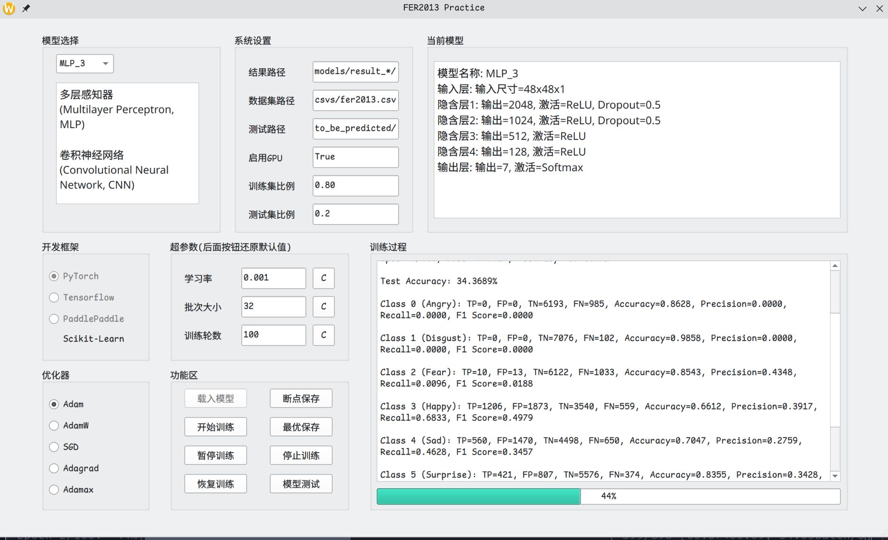
对应ROC曲线
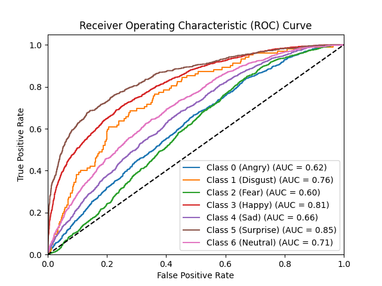
正在训练第 25 轮...
Epoch 25/100, Loss: 1.3302, Accuracy: 48.5736%
Test Accuracy: 44.1906%
Class 0 (Angry): TP=260, FP=445, TN=5748, FN=725, Accuracy=0.8370, Precision=0.3688, Recall=0.2640, F1 Score=0.3077
Class 1 (Disgust): TP=6, FP=7, TN=7069, FN=96, Accuracy=0.9857, Precision=0.4615, Recall=0.0588, F1 Score=0.1043
Class 2 (Fear): TP=214, FP=388, TN=5747, FN=829, Accuracy=0.8305, Precision=0.3555, Recall=0.2052, F1 Score=0.2602
Class 3 (Happy): TP=1227, FP=1062, TN=4351, FN=538, Accuracy=0.7771, Precision=0.5360, Recall=0.6952, F1 Score=0.6053
Class 4 (Sad): TP=488, FP=1022, TN=4946, FN=722, Accuracy=0.7570, Precision=0.3232, Recall=0.4033, F1 Score=0.3588
Class 5 (Surprise): TP=434, FP=350, TN=6033, FN=361, Accuracy=0.9009, Precision=0.5536, Recall=0.5459, F1 Score=0.5497
Class 6 (Neutral): TP=543, FP=732, TN=5168, FN=735, Accuracy=0.7956, Precision=0.4259, Recall=0.4249, F1 Score=0.4254
这个模型也比较简单,在25轮即收敛,跟我们的MLP_1不相上下。
模型参数如下
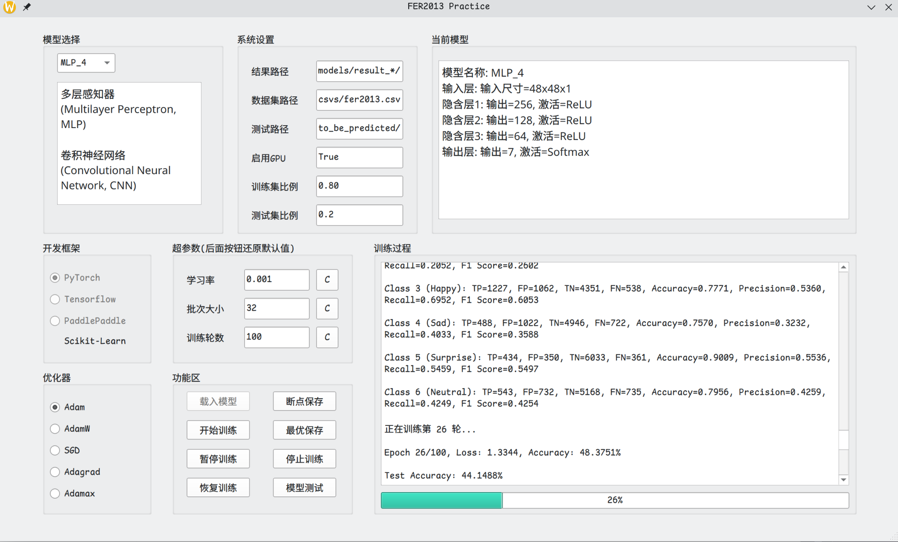
对应ROC曲线
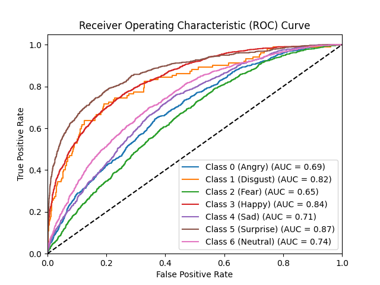
这个模型比2和3简单,并在收敛时“艰难地”训练到了第二个类别。
对于这些CNN模型,我们的预测准确率能有55%到60%,这是比较大的提升,说明了卷积神经网络在图像识别上的优势。
模型参数
模型名称: CNN_1
输入层: 输入尺寸=48x48x1
卷积层1: 输出通道=32, 卷积核=3x3, 激活=ReLU
池化层1: 池化核=2x2, 步幅=2
卷积层2: 输出通道=64, 卷积核=3x3, 激活=ReLU
池化层2: 池化核=2x2, 步幅=2
卷积层3: 输出通道=128, 卷积核=3x3, 激活=ReLU
池化层3: 池化核=2x2, 步幅=2
全连接层1: 输出=512, 激活=ReLU, Dropout
全连接层2: 输出=128, 激活=ReLU, Dropout
输出层: 输出=7, 激活=Softmax
模型在第25轮收敛
正在训练第 25 轮...
Epoch 25/100, Loss: 1.1931, Accuracy: 54.4429%
Test Accuracy: 56.0463%
Class 0 (Angry): TP=394, FP=380, TN=5813, FN=591, Accuracy=0.8647, Precision=0.5090, Recall=0.4000, F1 Score=0.4480
Class 1 (Disgust): TP=19, FP=14, TN=7062, FN=83, Accuracy=0.9865, Precision=0.5758, Recall=0.1863, F1 Score=0.2815
Class 2 (Fear): TP=213, FP=223, TN=5912, FN=830, Accuracy=0.8533, Precision=0.4885, Recall=0.2042, F1 Score=0.2880
Class 3 (Happy): TP=1425, FP=457, TN=4956, FN=340, Accuracy=0.8890, Precision=0.7572, Recall=0.8074, F1 Score=0.7815
Class 4 (Sad): TP=663, FP=1059, TN=4909, FN=547, Accuracy=0.7763, Precision=0.3850, Recall=0.5479, F1 Score=0.4523
Class 5 (Surprise): TP=575, FP=279, TN=6104, FN=220, Accuracy=0.9305, Precision=0.6733, Recall=0.7233, F1 Score=0.6974
Class 6 (Neutral): TP=734, FP=743, TN=5157, FN=544, Accuracy=0.8207, Precision=0.4970, Recall=0.5743, F1 Score=0.5328
第二个类别的F1 Score为0.2815,比之前的模型好了很多。（虽然TP和FP都不是很高）
ROC曲线更好了一点,Happy类别的AUC几乎总是最高的,第二个和第三个类别几乎都相对最低,但还是有所提升。
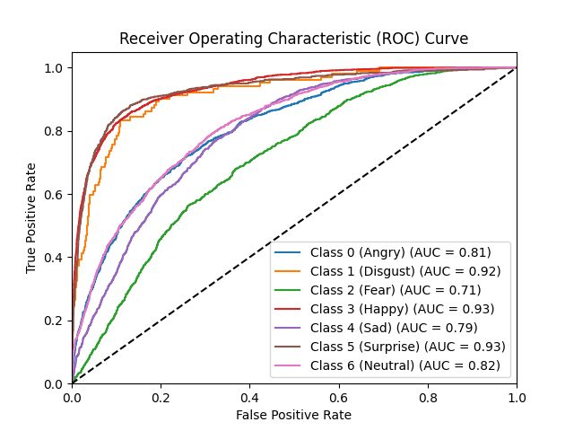
模型参数
模型名称: CNN_2
输入层: 输入尺寸=48x48x1
卷积层1: 输出通道=32, 卷积核=3x3, 激活=ReLU
卷积层2: 输出通道=32, 卷积核=3x3, 激活=ReLU
池化层1: 池化核=2x2, 步幅=2
卷积层3: 输出通道=64, 卷积核=3x3, 激活=ReLU
卷积层4: 输出通道=64, 卷积核=3x3, 激活=ReLU
池化层2: 池化核=2x2, 步幅=2
卷积层5: 输出通道=128, 卷积核=3x3, 激活=ReLU
卷积层6: 输出通道=128, 卷积核=3x3, 激活=ReLU
池化层3: 池化核=2x2, 步幅=2
全连接层1: 输出=512, 激活=ReLU, Dropout
全连接层2: 输出=128, 激活=ReLU, Dropout
输出层: 输出=7, 激活=Softmax
在模型1的基础上各个部分都加了一个卷积层
模型在第25轮收敛
正在训练第 25 轮...
Epoch 25/100, Loss: 1.1345, Accuracy: 56.3377%
Test Accuracy: 58.3310%
Class 0 (Angry): TP=472, FP=443, TN=5750, FN=513, Accuracy=0.8668, Precision=0.5158, Recall=0.4792, F1 Score=0.4968
Class 1 (Disgust): TP=2, FP=1, TN=7075, FN=100, Accuracy=0.9859, Precision=0.6667, Recall=0.0196, F1 Score=0.0381
Class 2 (Fear): TP=214, FP=219, TN=5916, FN=829, Accuracy=0.8540, Precision=0.4942, Recall=0.2052, F1 Score=0.2900
Class 3 (Happy): TP=1502, FP=455, TN=4958, FN=263, Accuracy=0.9000, Precision=0.7675, Recall=0.8510, F1 Score=0.8071
Class 4 (Sad): TP=648, FP=906, TN=5062, FN=562, Accuracy=0.7955, Precision=0.4170, Recall=0.5355, F1 Score=0.4689
Class 5 (Surprise): TP=586, FP=247, TN=6136, FN=209, Accuracy=0.9365, Precision=0.7035, Recall=0.7371, F1 Score=0.7199
Class 6 (Neutral): TP=763, FP=720, TN=5180, FN=515, Accuracy=0.8279, Precision=0.5145, Recall=0.5970, F1 Score=0.5527
这里可以大致看出准确率快接近60%了,不过第二个类别依然受了很大的类别不平衡的影响。
对应ROC曲线,第二个类别有点波动,其他跟第一个差不多
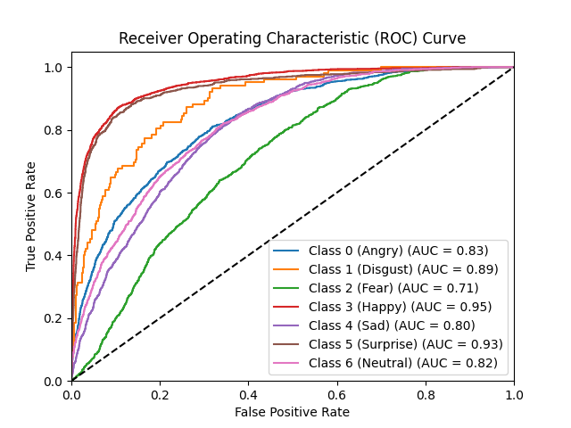
模型参数
模型名称: CNN_3
输入层: 输入尺寸=48x48x1
卷积层1: 输出通道=64, 卷积核=3x3, 激活=ReLU
卷积层2: 输出通道=64, 卷积核=3x3, 激活=ReLU
池化层1: 池化核=2x2, 步幅=2
卷积层3: 输出通道=128, 卷积核=3x3, 激活=ReLU
卷积层4: 输出通道=128, 卷积核=3x3, 激活=ReLU
池化层2: 池化核=2x2, 步幅=2
卷积层5: 输出通道=256, 卷积核=3x3, 激活=ReLU
卷积层6: 输出通道=256, 卷积核=3x3, 激活=ReLU
池化层3: 池化核=2x2, 步幅=2
全连接层1: 输出=512, 激活=ReLU, Dropout
全连接层2: 输出=128, 激活=ReLU, Dropout
输出层: 输出=7, 激活=Softmax
跟第二个的区别在于各个卷积层的输出通道数增加了一倍
结果更加接近60%了
正在训练第 26 轮...
Epoch 26/50, Loss: 1.0706, Accuracy: 58.9989%
Test Accuracy: 59.3898%
Class 0 (Angry): TP=477, FP=411, TN=5782, FN=508, Accuracy=0.8720, Precision=0.5372, Recall=0.4843, F1 Score=0.5093
Class 1 (Disgust): TP=10, FP=9, TN=7067, FN=92, Accuracy=0.9859, Precision=0.5263, Recall=0.0980, F1 Score=0.1653
Class 2 (Fear): TP=192, FP=237, TN=5898, FN=851, Accuracy=0.8484, Precision=0.4476, Recall=0.1841, F1 Score=0.2609
Class 3 (Happy): TP=1501, FP=390, TN=5023, FN=264, Accuracy=0.9089, Precision=0.7938, Recall=0.8504, F1 Score=0.8211
Class 4 (Sad): TP=673, FP=860, TN=5108, FN=537, Accuracy=0.8054, Precision=0.4390, Recall=0.5562, F1 Score=0.4907
Class 5 (Surprise): TP=604, FP=260, TN=6123, FN=191, Accuracy=0.9372, Precision=0.6991, Recall=0.7597, F1 Score=0.7281
Class 6 (Neutral): TP=806, FP=748, TN=5152, FN=472, Accuracy=0.8300, Precision=0.5187, Recall=0.6307, F1 Score=0.5692
对应ROC曲线
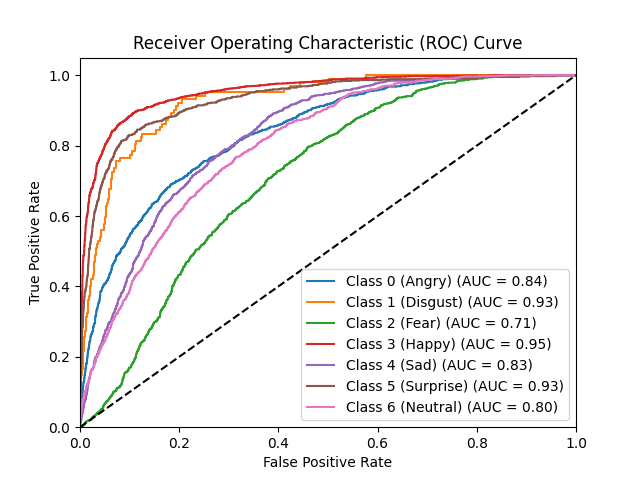
模型参数
模型名称: CNN_4
输入层: 输入尺寸=48x48x1
卷积层1: 输出通道=32, 核大小=3x3, 填充=1, 激活=ReLU
池化层1: 核大小=2x2, 步幅=2
卷积层2: 输出通道=64, 核大小=3x3, 填充=1, 激活=ReLU
池化层2: 核大小=2x2, 步幅=2
卷积层3: 输出通道=128, 核大小=3x3, 填充=1, 激活=ReLU
池化层3: 核大小=2x2, 步幅=2
卷积层4: 输出通道=256, 核大小=3x3, 填充=1, 激活=ReLU
池化层4: 核大小=2x2, 步幅=2
全连接层1: 输出=512, 激活=ReLU, Dropout
全连接层2: 输出=128, 激活=ReLU, Dropout
输出层: 输出=7, 激活=Softmax
这个CNN_4模型我们用来随时修改实验。第一次设计时,我们相对于第一个模型只是添加了第四层，稍后的实验将进行修改。
结果是在第25轮收敛,比第一个模型稍微好一点
正在训练第 26 轮...
Epoch 26/100, Loss: 1.1276, Accuracy: 56.5850%
Test Accuracy: 57.9967%
Class 0 (Angry): TP=453, FP=438, TN=5755, FN=532, Accuracy=0.8649, Precision=0.5084, Recall=0.4599, F1 Score=0.4829
Class 1 (Disgust): TP=11, FP=18, TN=7058, FN=91, Accuracy=0.9848, Precision=0.3793, Recall=0.1078, F1 Score=0.1679
Class 2 (Fear): TP=199, FP=222, TN=5913, FN=844, Accuracy=0.8515, Precision=0.4727, Recall=0.1908, F1 Score=0.2719
Class 3 (Happy): TP=1465, FP=440, TN=4973, FN=300, Accuracy=0.8969, Precision=0.7690, Recall=0.8300, F1 Score=0.7984
Class 4 (Sad): TP=639, FP=865, TN=5103, FN=571, Accuracy=0.7999, Precision=0.4249, Recall=0.5281, F1 Score=0.4709
Class 5 (Surprise): TP=610, FP=277, TN=6106, FN=185, Accuracy=0.9356, Precision=0.6877, Recall=0.7673, F1 Score=0.7253
Class 6 (Neutral): TP=786, FP=755, TN=5145, FN=492, Accuracy=0.8263, Precision=0.5101, Recall=0.6150, F1 Score=0.5576
对应的ROC曲线
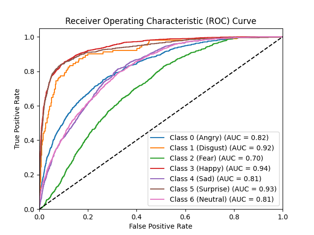
曲线总体趋势还是向左上角靠拢。
Qtdesigner设计,使用PyQt6实现,然后使用Pyuic6将ui文件转换为py文件,最后在main.py中调用。Pytorch,Tensorflow和Paddlepaddle,5个优化器和8个模型,排列组合可以做120次实验。为节省时间,我们只以Pytorch为例进行实验。try和except来导入模型和优化器,这样可以在不同的Python环境上进行实验, 包管理和模型不会互相干扰, 同时提升了打开Qt界面的速度。Failed to import TensorFlow: No module named 'tensorflow',这是正常的,不影响程序运行。我们使用了五个优化器, 分别是Adam, AdamW, SGD, Adgrad, Adamax, 下面是使用CNN_2模型的实验结果。
正在训练第 25 轮...
Epoch 25/100, Loss: 1.1345, Accuracy: 56.3377%
Test Accuracy: 58.3310%
Class 0 (Angry): TP=472, FP=443, TN=5750, FN=513, Accuracy=0.8668, Precision=0.5158, Recall=0.4792, F1 Score=0.4968
Class 1 (Disgust): TP=2, FP=1, TN=7075, FN=100, Accuracy=0.9859, Precision=0.6667, Recall=0.0196, F1 Score=0.0381
Class 2 (Fear): TP=214, FP=219, TN=5916, FN=829, Accuracy=0.8540, Precision=0.4942, Recall=0.2052, F1 Score=0.2900
Class 3 (Happy): TP=1502, FP=455, TN=4958, FN=263, Accuracy=0.9000, Precision=0.7675, Recall=0.8510, F1 Score=0.8071
Class 4 (Sad): TP=648, FP=906, TN=5062, FN=562, Accuracy=0.7955, Precision=0.4170, Recall=0.5355, F1 Score=0.4689
Class 5 (Surprise): TP=586, FP=247, TN=6136, FN=209, Accuracy=0.9365, Precision=0.7035, Recall=0.7371, F1 Score=0.7199
Class 6 (Neutral): TP=763, FP=720, TN=5180, FN=515, Accuracy=0.8279, Precision=0.5145, Recall=0.5970, F1 Score=0.5527
正在训练第 27 轮...
Epoch 27/50, Loss: 1.0954, Accuracy: 58.3928%
Test Accuracy: 59.2366%
Class 0 (Angry): TP=475, FP=404, TN=5789, FN=510, Accuracy=0.8727, Precision=0.5404, Recall=0.4822, F1 Score=0.5097
Class 1 (Disgust): TP=7, FP=2, TN=7074, FN=95, Accuracy=0.9865, Precision=0.7778, Recall=0.0686, F1 Score=0.1261
Class 2 (Fear): TP=213, FP=245, TN=5890, FN=830, Accuracy=0.8502, Precision=0.4651, Recall=0.2042, F1 Score=0.2838
Class 3 (Happy): TP=1511, FP=408, TN=5005, FN=254, Accuracy=0.9078, Precision=0.7874, Recall=0.8561, F1 Score=0.8203
Class 4 (Sad): TP=661, FP=904, TN=5064, FN=549, Accuracy=0.7976, Precision=0.4224, Recall=0.5463, F1 Score=0.4764
Class 5 (Surprise): TP=604, FP=246, TN=6137, FN=191, Accuracy=0.9391, Precision=0.7106, Recall=0.7597, F1 Score=0.7343
Class 6 (Neutral): TP=781, FP=717, TN=5183, FN=497, Accuracy=0.8309, Precision=0.5214, Recall=0.6111, F1 Score=0.5627
SGD优化器对学习率比较敏感。我们使用0.001的学习率时，训练5次有4次模型无法收敛，在第一轮结束后直接无法学习，准确率为25%左右。我们将学习率调整到了0.01的结果如下
正在训练第 27 轮...
Epoch 27/100, Loss: 1.1074, Accuracy: 57.8111%
Test Accuracy: 59.2366%
Class 0 (Angry): TP=475, FP=398, TN=5795, FN=510, Accuracy=0.8735, Precision=0.5441, Recall=0.4822, F1 Score=0.5113
Class 1 (Disgust): TP=1, FP=0, TN=7076, FN=101, Accuracy=0.9859, Precision=1.0000, Recall=0.0098, F1 Score=0.0194
Class 2 (Fear): TP=226, FP=256, TN=5879, FN=817, Accuracy=0.8505, Precision=0.4689, Recall=0.2167, F1 Score=0.2964
Class 3 (Happy): TP=1492, FP=400, TN=5013, FN=273, Accuracy=0.9062, Precision=0.7886, Recall=0.8453, F1 Score=0.8160
Class 4 (Sad): TP=660, FP=874, TN=5094, FN=550, Accuracy=0.8016, Precision=0.4302, Recall=0.5455, F1 Score=0.4810
Class 5 (Surprise): TP=600, FP=256, TN=6127, FN=195, Accuracy=0.9372, Precision=0.7009, Recall=0.7547, F1 Score=0.7268
Class 6 (Neutral): TP=798, FP=742, TN=5158, FN=480, Accuracy=0.8298, Precision=0.5182, Recall=0.6244, F1 Score=0.5664
可以看到SGD优化器在学习率为0.01时效果还不错,甚至略好于其他优化器，但学习过程不是很稳定。同时看到第二个类别的不平衡问题依然造成了影响。
下面是调到0.001时勉强训练成功的结果
正在训练第 13 轮...
Epoch 13/25, Loss: 1.5274, Accuracy: 41.1683%
Test Accuracy: 40.2480%
Class 0 (Angry): TP=192, FP=386, TN=5807, FN=793, Accuracy=0.8357, Precision=0.3322, Recall=0.1949, F1 Score=0.2457
Class 1 (Disgust): TP=0, FP=0, TN=7076, FN=102, Accuracy=0.9858, Precision=0.0000, Recall=0.0000, F1 Score=0.0000
Class 2 (Fear): TP=107, FP=285, TN=5850, FN=936, Accuracy=0.8299, Precision=0.2730, Recall=0.1026, F1 Score=0.1491
Class 3 (Happy): TP=1274, FP=1429, TN=3984, FN=491, Accuracy=0.7325, Precision=0.4713, Recall=0.7218, F1 Score=0.5703
Class 4 (Sad): TP=409, FP=916, TN=5052, FN=801, Accuracy=0.7608, Precision=0.3087, Recall=0.3380, F1 Score=0.3227
Class 5 (Surprise): TP=437, FP=483, TN=5900, FN=358, Accuracy=0.8828, Precision=0.4750, Recall=0.5497, F1 Score=0.5096
Class 6 (Neutral): TP=470, FP=790, TN=5110, FN=808, Accuracy=0.7774, Precision=0.3730, Recall=0.3678, F1 Score=0.3704
模型在第13轮收敛,效果不如测试的MLP_1模型
Adagrad优化器的学习效果不尽如人意，在这次试验中第18轮收敛，效果甚至不如MLP_1测试模型
正在训练第 18 轮...
Epoch 18/25, Loss: 1.5090, Accuracy: 41.8858%
Test Accuracy: 43.0203%
Class 0 (Angry): TP=112, FP=205, TN=5988, FN=873, Accuracy=0.8498, Precision=0.3533, Recall=0.1137, F1 Score=0.1720
Class 1 (Disgust): TP=0, FP=0, TN=7076, FN=102, Accuracy=0.9858, Precision=0.0000, Recall=0.0000, F1 Score=0.0000
Class 2 (Fear): TP=96, FP=205, TN=5930, FN=947, Accuracy=0.8395, Precision=0.3189, Recall=0.0920, F1 Score=0.1429
Class 3 (Happy): TP=1364, FP=1249, TN=4164, FN=401, Accuracy=0.7701, Precision=0.5220, Recall=0.7728, F1 Score=0.6231
Class 4 (Sad): TP=463, FP=1043, TN=4925, FN=747, Accuracy=0.7506, Precision=0.3074, Recall=0.3826, F1 Score=0.3409
Class 5 (Surprise): TP=471, FP=428, TN=5955, FN=324, Accuracy=0.8952, Precision=0.5239, Recall=0.5925, F1 Score=0.5561
Class 6 (Neutral): TP=582, FP=960, TN=4940, FN=696, Accuracy=0.7693, Precision=0.3774, Recall=0.4554, F1 Score=0.4128
正在训练第 25 轮...
Epoch 25/25, Loss: 1.0825, Accuracy: 58.7586%
Test Accuracy: 59.3341%
Class 0 (Angry): TP=482, FP=395, TN=5798, FN=503, Accuracy=0.8749, Precision=0.5496, Recall=0.4893, F1 Score=0.5177
Class 1 (Disgust): TP=8, FP=1, TN=7075, FN=94, Accuracy=0.9868, Precision=0.8889, Recall=0.0784, F1 Score=0.1441
Class 2 (Fear): TP=243, FP=280, TN=5855, FN=800, Accuracy=0.8495, Precision=0.4646, Recall=0.2330, F1 Score=0.3103
Class 3 (Happy): TP=1489, FP=409, TN=5004, FN=276, Accuracy=0.9046, Precision=0.7845, Recall=0.8436, F1 Score=0.8130
Class 4 (Sad): TP=684, FP=885, TN=5083, FN=526, Accuracy=0.8034, Precision=0.4359, Recall=0.5653, F1 Score=0.4923
Class 5 (Surprise): TP=582, FP=251, TN=6132, FN=213, Accuracy=0.9354, Precision=0.6987, Recall=0.7321, F1 Score=0.7150
Class 6 (Neutral): TP=771, FP=698, TN=5202, FN=507, Accuracy=0.8321, Precision=0.5248, Recall=0.6033, F1 Score=0.5613
从这些结果可以看出，使用AdamW和Adamax优化器的效果最好，其中Adamax的ROC曲线如下
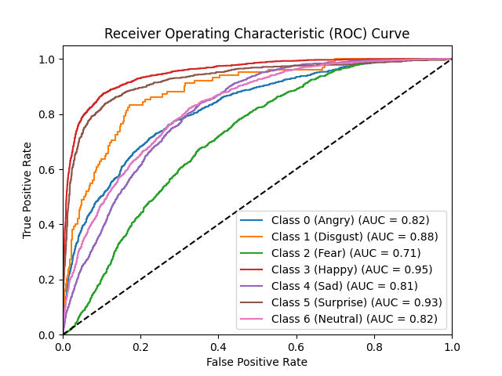
观察ROC曲线可以发现图形的整体趋势都是Happy Disguset 和Surprise类别的AUC值相对高，Angry Sad Neutral三者在一起次之，Fear类别的AUC值总是相对最低，可能是因为类别不平衡的策略不够好。
根据GitHub Copilot的提示, 我们可以使用欠采样,过采样或者类别权重来解决类别不平衡问题。经过实际实验(CNN_2), 可能由于模型较为简单, 在使用其他采样方法时, 模型收敛速度过慢, 无法达到高效的训练效果。而使用加权损失函数, 在PreTrained.py中进行测试, 最终效果差别不是特别大。下面是使用了加权损失函数的预训练模型的结果。可以看到损失多了大约0.04, 准确率提升了大约0.7%。在我们的自定义模型中, 由于模型较为简单, 经过多次实验, 使用加权损失函数的效果并不是很明显。
Epoch 69/100: 100%|█████████████████████████████████████████████████████████████████| 898/898 [01:44<00:00, 8.56batch/s]
Epoch 69/100, Loss: 0.3167, Accuracy: 88.3103%
Test Accuracy: 68.9189%
Class 0 (Angry): TP=632, FP=423, TN=5770, FN=353
Class 1 (Disgust): TP=75, FP=43, TN=7033, FN=27
Class 2 (Fear): TP=514, FP=351, TN=5784, FN=529
Class 3 (Happy): TP=1521, FP=219, TN=5194, FN=244
Class 4 (Sad): TP=668, FP=489, TN=5479, FN=542
Class 5 (Surprise): TP=638, FP=176, TN=6207, FN=157
Class 6 (Neutral): TP=899, FP=530, TN=5370, FN=379
Overall: Accuracy=68.9189%, Precision=0.6291, Recall=0.7034, F1 Score=0.6642
根据Copilot的提示：K折交叉验证会有边际收益递减的情况。随着K值的增加，模型的评估会更加稳定和可靠，但同时也会显著增加计算成本。对于一些复杂的模型，增加K值带来的性能提升可能不足以弥补额外的计算开销。
在实际应用中，选择合适的K值需要权衡计算成本和模型评估的稳定性。常见的选择是K=5或K=10，这通常能够提供足够的评估稳定性，同时不会带来过高的计算成本。
在本次实验中，我们提前对MLP_1和CNN_2模型进行了5折交叉验证(在GUI界面尚未做好的情况下)，显然训练时间延长为5倍，但模型训练结果并没有显著提升。为节省计算成本，在GUI项目中我们没有使用K折交叉验证。
ResNet18是在较大的图像数据集上训练的，这样可以更好地利用预训练模型的特征提取能力，可以说遇强则强。如果使用48x48的图像，会导致模型的特征提取能力不足，从而影响模型的训练效果。CNN_2模型处理224x224的图像，训练时间会大大增加，而且效果不如测试用的MLP_1模型处理48x48的图像。ResNet18残差网络，是受欢迎的现代卷积神经网络模型之一，我们只是调整了图像输入通道，最后的训练准确率也接近69%。对于我们的Qt图形界面里的模型，包括MLP和CNN，均为我们自己设计的模型，而没有使用现成的模型。根据书本和课程的内容，再依据语言大模型的提示自己设计了模型，这样可以更好地理解模型的原理和设计思想，同时也可以更好地调整模型的参数，提高模型的训练效果。ResNet、VGG、Inception等，这些模型在大型数据集上训练，效果更好，同时也可以更好地适应我们的应用场景，让我们更加专注于模型的具体应用和问题解决，提高工作效率。以下是我学习《动手学深度学习(Pytorch版)》书籍的摘录:
在前面的章节中，我们遇到过图像数据。 这种数据的每个样本都由一个二维像素网格组成， 每个像素可能是一个或者多个数值，取决于是黑白还是彩色图像。 到目前为止，我们处理这类结构丰富的数据的方式还不够有效。 我们仅仅通过将图像数据展平成一维向量而忽略了每个图像的空间结构信息，再将数据送入一个全连接的多层感知机中。 因为这些网络特征元素的顺序是不变的，因此最优的结果是利用先验知识，即利用相近像素之间的相互关联性，从图像数据中学习得到有效的模型。
本章介绍的卷积神经网络（convolutional neural network，CNN）是一类强大的、为处理图像数据而设计的神经网络。 基于卷积神经网络架构的模型在计算机视觉领域中已经占主导地位，当今几乎所有的图像识别、目标检测或语义分割相关的学术竞赛和商业应用都以这种方法为基础。
现代卷积神经网络的设计得益于生物学、群论和一系列的补充实验。 卷积神经网络需要的参数少于全连接架构的网络，而且卷积也很容易用GPU并行计算。 因此卷积神经网络除了能够高效地采样从而获得精确的模型，还能够高效地计算。 久而久之，从业人员越来越多地使用卷积神经网络。即使在通常使用循环神经网络的一维序列结构任务上（例如音频、文本和时间序列分析），卷积神经网络也越来越受欢迎。 通过对卷积神经网络一些巧妙的调整，也使它们在图结构数据和推荐系统中发挥作用。
我们之前讨论的多层感知机十分适合处理表格数据，其中行对应样本，列对应特征。 对于表格数据，我们寻找的模式可能涉及特征之间的交互，但是我们不能预先假设任何与特征交互相关的先验结构。 此时，多层感知机可能是最好的选择，然而对于高维感知数据，这种缺少结构的网络可能会变得不实用。
例如，在之前猫狗分类的例子中：假设我们有一个足够充分的照片数据集，数据集中是拥有标注的照片，每张照片具有百万级像素，这意味着网络的每次输入都有一百万个维度。 即使将隐藏层维度降低到1000，这个全连接层也将有10^9个参数。 想要训练这个模型将不可实现，因为需要有大量的GPU、分布式优化训练的经验和超乎常人的耐心。
有些读者可能会反对这个观点，认为要求百万像素的分辨率可能不是必要的。 然而，即使分辨率减小为十万像素，使用1000个隐藏单元的隐藏层也可能不足以学习到良好的图像特征，在真实的系统中我们仍然需要数十亿个参数。 此外，拟合如此多的参数还需要收集大量的数据。 然而，如今人类和机器都能很好地区分猫和狗：这是因为图像中本就拥有丰富的结构，而这些结构可以被人类和机器学习模型使用。 卷积神经网络（convolutional neural networks，CNN）是机器学习利用自然图像中一些已知结构的创造性方法。
可以看到，卷积神经网络是处理图像数据的最佳选择，因为它可以利用图像数据的空间结构信息，从而提高模型的训练效果。在我们的实验中，我们后面使用了卷积神经网络处理图像数据。
下面再提一下我们的CNN_3模型的结构
# 定义 CNN_3 模型
class CNN_3(nn.Module):
def __init__(self, num_classes=7):
super(CNN_3, self).__init__()
self.features = nn.Sequential(
nn.Conv2d(1, 64, kernel_size=3, padding=1),
nn.ReLU(),
nn.Conv2d(64, 64, kernel_size=3, padding=1),
nn.ReLU(),
nn.MaxPool2d(kernel_size=2, stride=2),
nn.Conv2d(64, 128, kernel_size=3, padding=1),
nn.ReLU(),
nn.Conv2d(128, 128, kernel_size=3, padding=1),
nn.ReLU(),
nn.MaxPool2d(kernel_size=2, stride=2),
nn.Conv2d(128, 256, kernel_size=3, padding=1),
nn.ReLU(),
nn.Conv2d(256, 256, kernel_size=3, padding=1),
nn.ReLU(),
nn.MaxPool2d(kernel_size=2, stride=2)
)
self.classifier = nn.Sequential(
nn.Dropout(),
nn.Linear(256 * 6 * 6, 512),
nn.ReLU(),
nn.Dropout(),
nn.Linear(512, 128),
nn.ReLU(),
nn.Linear(128, num_classes)
)
def forward(self, x):
x = self.features(x)
x = x.view(x.size(0), -1)
x = self.classifier(x)
return x
这个模型包括特征提取部分(features):
分类部分(classifier):
卷积神经网络在图像识别领域有着广泛的应用，我们的实验也粗略证明了卷积神经网络在处理图像数据时的优势。
在以后的学习中，我们将更多关注卷积神经网络的结构和应用，以便更好地处理图像数据。
我们修改了CNN_4_original模型，增加了批量规范化和LeakyReLU激活函数，Adam优化器使用了L2正则化，下面是模型参数
# 定义 CNN_4 模型
class CNN_4(nn.Module):
def __init__(self, num_classes=7):
super(CNN_4, self).__init__()
self.features = nn.Sequential(
nn.Conv2d(1, 64, kernel_size=3, padding=1),
nn.BatchNorm2d(64),
nn.LeakyReLU(0.1),
nn.Conv2d(64, 64, kernel_size=3, padding=1),
nn.BatchNorm2d(64),
nn.LeakyReLU(0.1),
nn.MaxPool2d(kernel_size=2, stride=2),
nn.Conv2d(64, 128, kernel_size=3, padding=1),
nn.BatchNorm2d(128),
nn.LeakyReLU(0.1),
nn.Conv2d(128, 128, kernel_size=3, padding=1),
nn.BatchNorm2d(128),
nn.LeakyReLU(0.1),
nn.MaxPool2d(kernel_size=2, stride=2),
nn.Conv2d(128, 256, kernel_size=3, padding=1),
nn.BatchNorm2d(256),
nn.LeakyReLU(0.1),
nn.Conv2d(256, 256, kernel_size=3, padding=1),
nn.BatchNorm2d(256),
nn.LeakyReLU(0.1),
nn.MaxPool2d(kernel_size=2, stride=2)
)
self.classifier = nn.Sequential(
nn.Dropout(),
nn.Linear(256 * 6 * 6, 512),
nn.BatchNorm1d(512),
nn.LeakyReLU(0.1),
nn.Dropout(),
nn.Linear(512, 128),
nn.BatchNorm1d(128),
nn.LeakyReLU(0.1),
nn.Linear(128, num_classes)
)
self._initialize_weights()
def forward(self, x):
x = self.features(x)
x = x.view(x.size(0), -1)
x = self.classifier(x)
return x
def _initialize_weights(self):
for m in self.modules():
if isinstance(m, nn.Conv2d) or isinstance(m, nn.Linear):
nn.init.kaiming_normal_(m.weight, mode='fan_out', nonlinearity='leaky_relu')
if m.bias is not None:
nn.init.constant_(m.bias, 0)
文字说明如下
模型名称: CNN_4
输入层: 输入尺寸=48x48x1
卷积层1: 输出通道=64, 核大小=3x3, 填充=1, 激活=LeakyReLU(0.1), 批量规范化
卷积层2: 输出通道=64, 核大小=3x3, 填充=1, 激活=LeakyReLU(0.1), 批量规范化
池化层1: 核大小=2x2, 步幅=2
卷积层3: 输出通道=128, 核大小=3x3, 填充=1, 激活=LeakyReLU(0.1), 批量规范化
卷积层4: 输出通道=128, 核大小=3x3, 填充=1, 激活=LeakyReLU(0.1), 批量规范化
池化层2: 核大小=2x2, 步幅=2
卷积层5: 输出通道=256, 核大小=3x3, 填充=1, 激活=LeakyReLU(0.1), 批量规范化
卷积层6: 输出通道=256, 核大小=3x3, 填充=1, 激活=LeakyReLU(0.1), 批量规范化
池化层3: 核大小=2x2, 步幅=2
全连接层1: 输出=512, 激活=LeakyReLU(0.1), 批量规范化, Dropout
全连接层2: 输出=128, 激活=LeakyReLU(0.1), 批量规范化, Dropout
输出层: 输出=7, 激活=Softmax
我们使用80%的训练集，20%的测试集，使用Adam优化器，学习率为0.004，训练100轮，模型在30多轮就收敛了，下面是第32轮的结果
正在训练第 32 轮...
Epoch 32/100, Loss: 0.8952, Accuracy: 66.2754%
Test Accuracy: 65.5196%
Class 0 (Angry): TP=547, FP=377, TN=5816, FN=438, Accuracy=0.8865, Precision=0.5920, Recall=0.5553, F1 Score=0.5731
Class 1 (Disgust): TP=43, FP=22, TN=7054, FN=59, Accuracy=0.9887, Precision=0.6615, Recall=0.4216, F1 Score=0.5150
Class 2 (Fear): TP=452, FP=443, TN=5692, FN=591, Accuracy=0.8559, Precision=0.5050, Recall=0.4334, F1 Score=0.4665
Class 3 (Happy): TP=1550, FP=322, TN=5091, FN=215, Accuracy=0.9252, Precision=0.8280, Recall=0.8782, F1 Score=0.8524
Class 4 (Sad): TP=661, FP=606, TN=5362, FN=549, Accuracy=0.8391, Precision=0.5217, Recall=0.5463, F1 Score=0.5337
Class 5 (Surprise): TP=619, FP=191, TN=6192, FN=176, Accuracy=0.9489, Precision=0.7642, Recall=0.7786, F1 Score=0.7713
Class 6 (Neutral): TP=831, FP=514, TN=5386, FN=447, Accuracy=0.8661, Precision=0.6178, Recall=0.6502, F1 Score=0.6336
我们这次的模型跟其他CNN相比，损失降到了1以下，准确率也达到了65.5%，效果相对非常不错了，多数MLP无法训练的第二个类别，这次的模型也有了不错的效果，可以看到F1 Score超过了0.5。这是我们这次调整模型的一个亮点。
下面是我们的ROC曲线
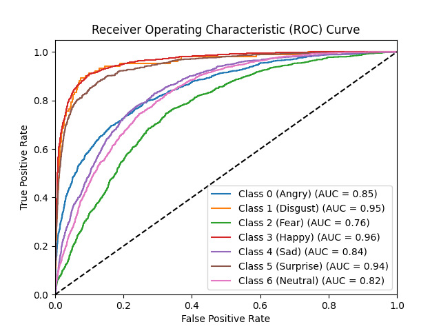
曲线的基本趋势和之前类似，但是相对来看曲线更平滑，这次训练比较稳定。
顺便放一张训练过程nvtop的截图
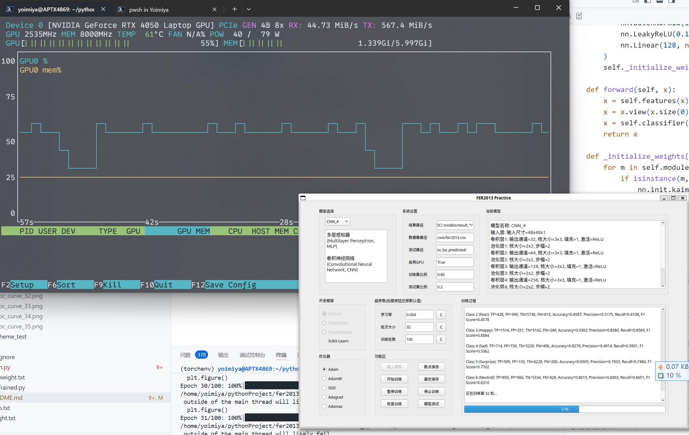
随着后续的更深入学习，我们将持续优化模型，提高模型的训练效果，同时也会更多地关注卷积神经网络的结构和应用，以便更好地处理图像数据。